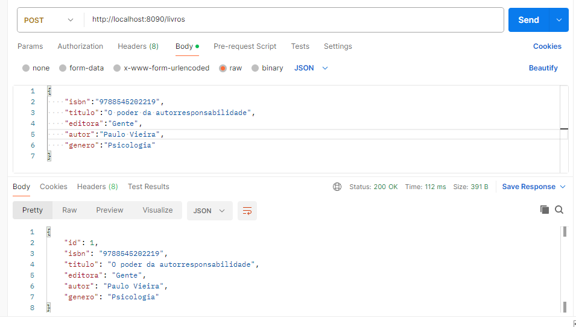

Desenvolvimento De Sistemas:
Primeiro Trimestre
Calculadora de Horas em react
digite os horarios que deseja calcular!
:
:
Resultado
Nessa atividade, o professor passou um filme sobre a Primeira Guerra Mundial, "1917", e depois tínhamos que responder algumas perguntas.
Competências e habilidades: C3 H15 H16
POSTMAN

O objetivo da atividade era escolher um país que sofreu com o processo de colonização após a 2ª Revolução Industrial. Eu escolhi Marrocos.
Competências e habilidades: C6 H39
Segundo Trimestre